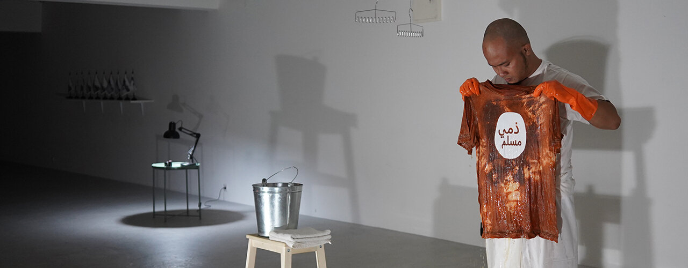
Featured image: Angga Wedhaswhara. Photo by Afil Wijaya.
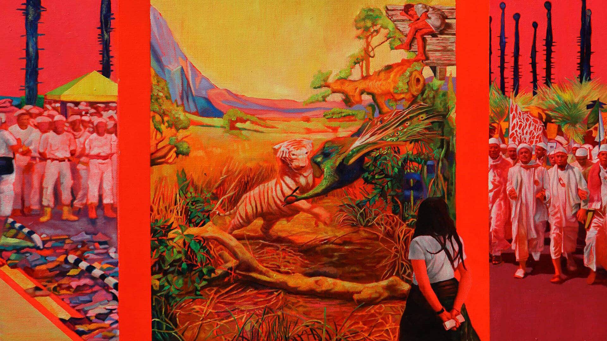
The hugely ambitious APT series brings significant art from across the Asia Pacific to Brisbane. Overflowing with colour and life, this free contemporary art exhibition presents a unique mix of creativity and cross-cultural insight.
Discover more than 400 artworks by over 80 individuals, collectives and groups that capture the energy of new art being created in Asia, the Pacific and Australia.
Alongside the exhibition are 3 thought-provoking film programs, 8 hands on activities for kids and 5 months of ongoing programs and special events, including daily guided tours.
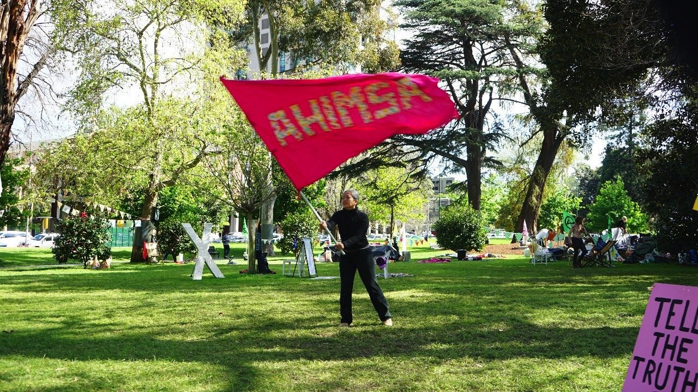
Senior Indonesian performance artist Arahmaiani and painter Zico Albaiquini were here for a 1 month residency at the Faculty of Fine Arts and Music at the University of Melbourne, part of Project Eleven's 3-year commitment to the residency programme.
Staying at the Norma Redpath studio, they have been exploring Melbourne and meeting all sorts of interesting people.
This photo was taken by Zico, as Arahmaiani marched with the Extinction Rebellion through Melbourne streets waving her own flag carrying the Ahimsa message of non-violence.
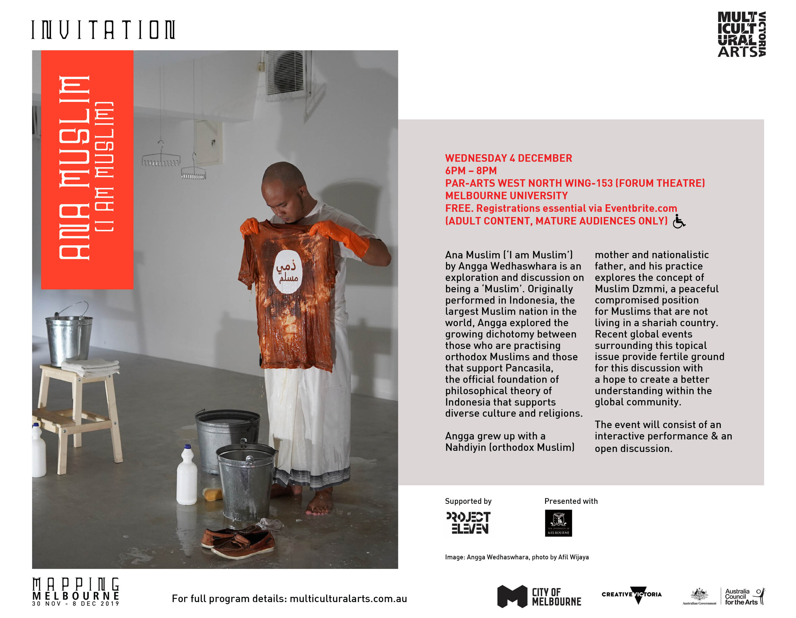
Ana Muslim (I am Muslim) by Angga Wedhaswhara was an exploration and discussion on being a ‘Muslim’. Angga’s practice explores the concept of Muslim Dzmmi, a peaceful compromised position for Muslims that are not living in a shariah country.
A conversation about identity, religion and family through interactive performance.
Presented by Multicultural Arts Victoria in conjunction with University of Melbourne and Project Eleven.
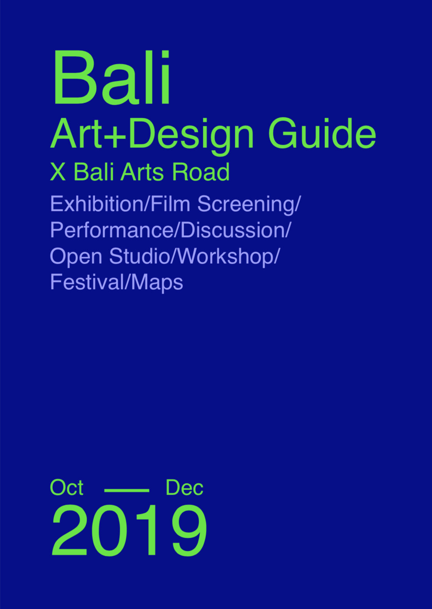
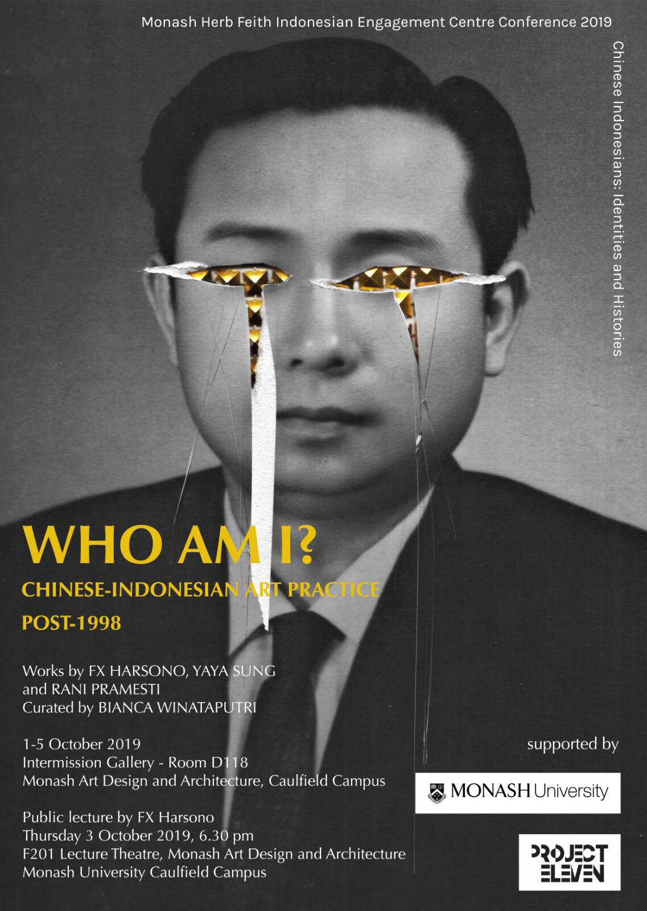
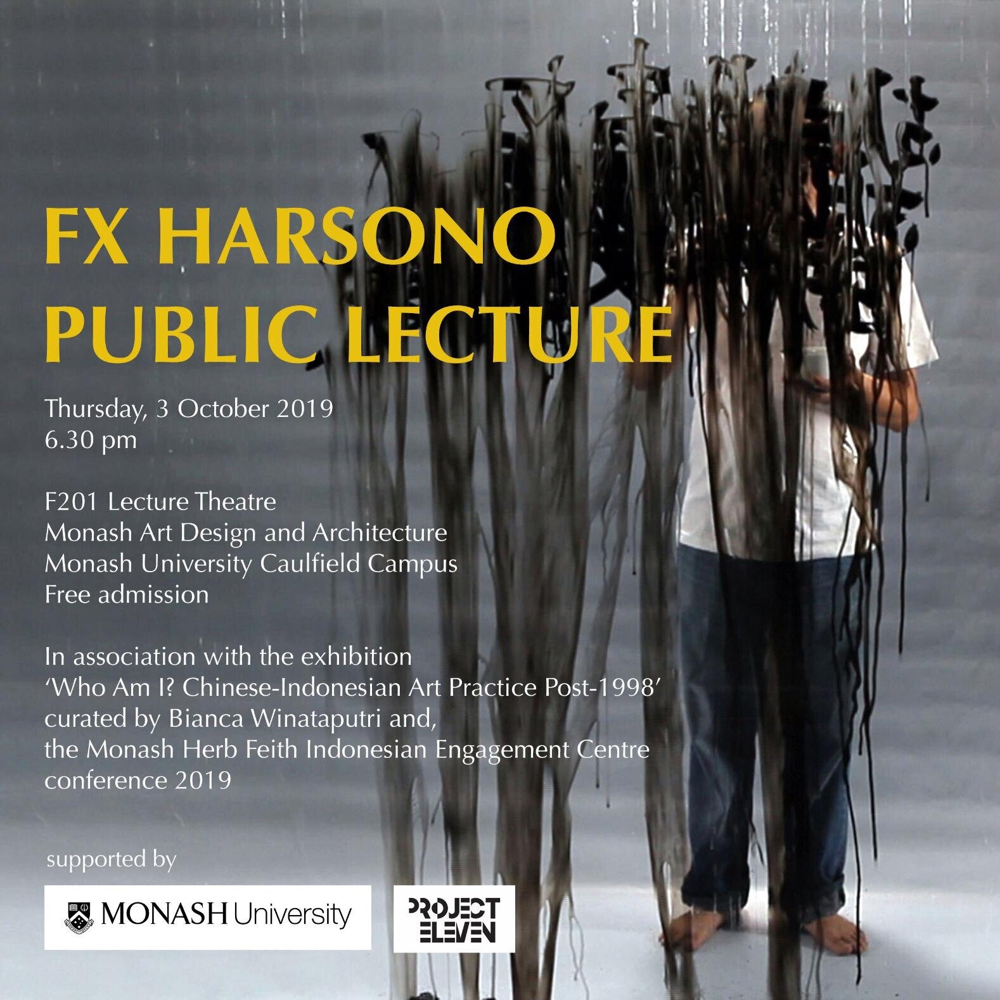
Jogja-based artist Mulyana spent 1 month with us in Melbourne for a residency, culminating in a music and art workshop for children as part of Melbourne Fringe at the City of Maribyrnong and Artplay with Little Music Lab.
While here, he also presented a talk at VCA and conducted workshops with the Australian Tapestry Workshop.
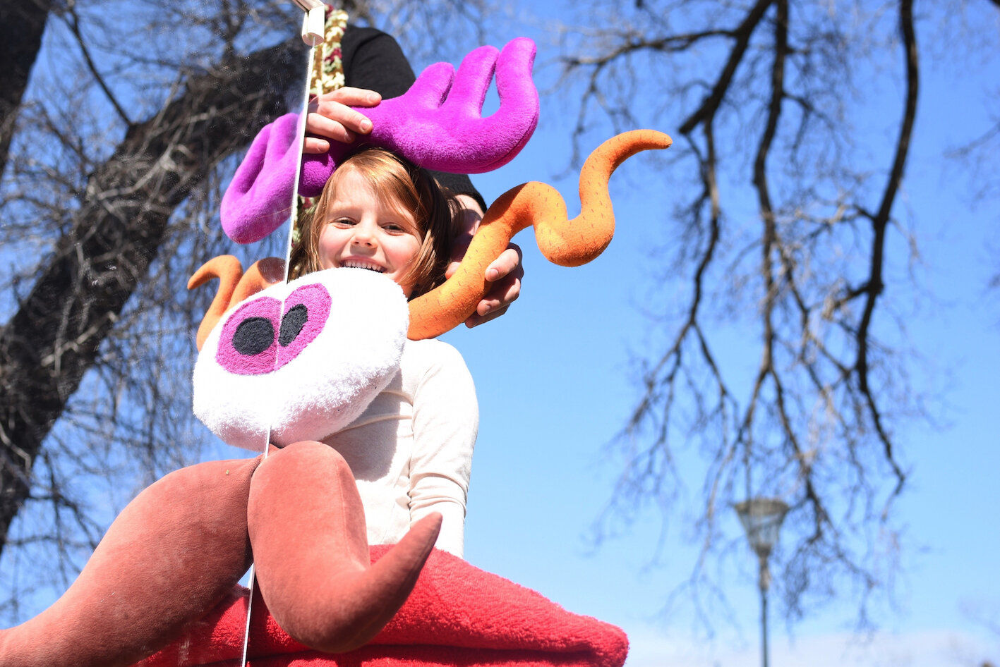
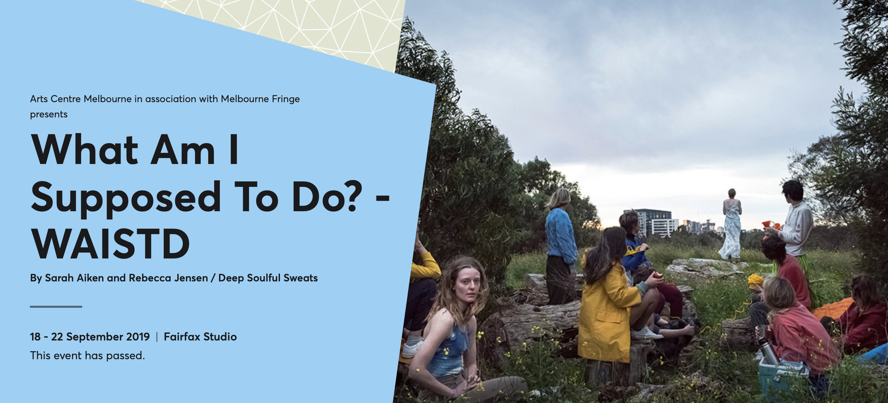
Staring into our cultural inertia and the hypocrisies of trying to be good in the face of a climate crisis, What Am I Supposed To Do? (WAISTD) is a truly immersive experience questioning the complexities and complicity of contemporary Australia. Digging into the stasis that holds us back from doing anything, this dark, hopeful and irreverent cautionary tale reminds that now is not the time to sit back and watch.
Sarah Aiken and Rebecca Jensen / Deep Soulful Sweats invite you to jump in the twin cab for a jaw-dropping ride through cultural detritus of colonial Australia in an unfolding eco-horror. Somewhere between mass games, film set and school play, you will play a vital part in a performance without spectators. Directed live, the entire audience move through a collage of drama, movement and narrative, heavy on the symbolism.
Praxis 5 showcases the talent of these five Australian artists – Holly Block, Jesse Bowling, Farnaz Dadfar, Lucia Rossi and Katie Stackhouse from the VCA Masters program. Download exhibition catalogue.
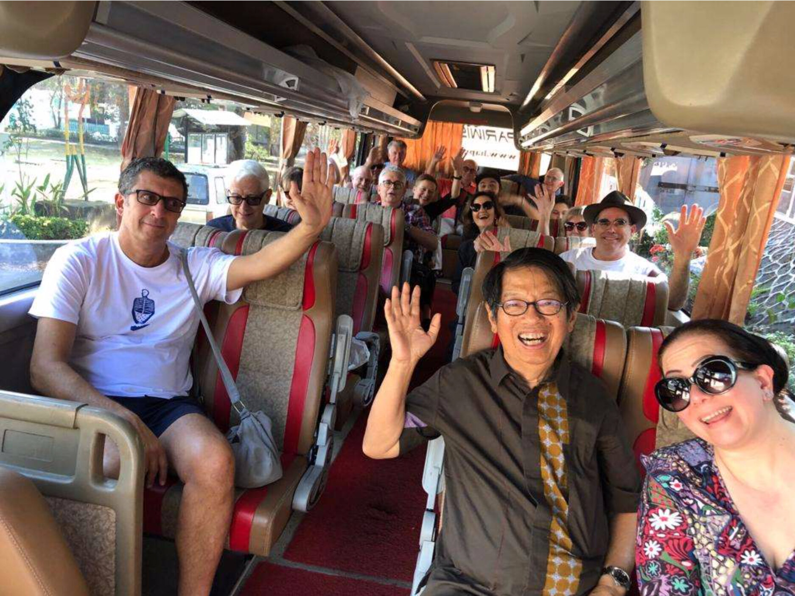
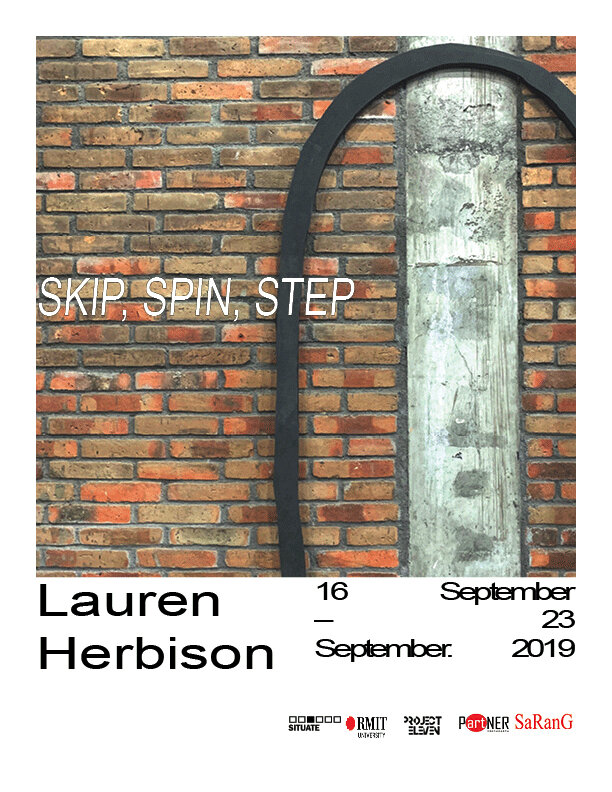
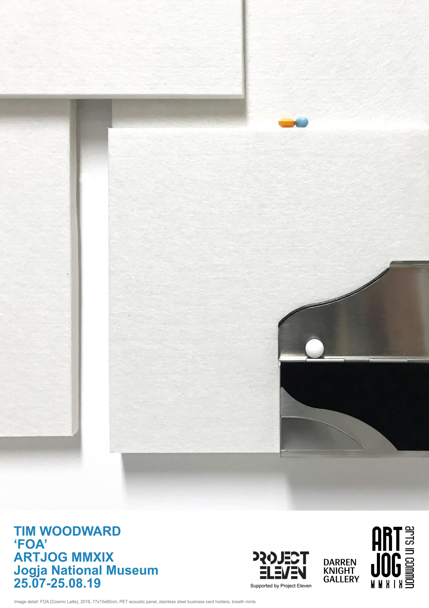
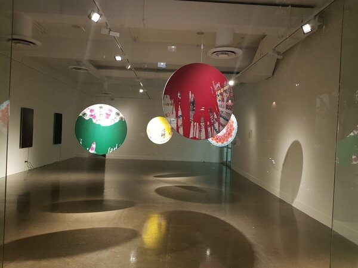
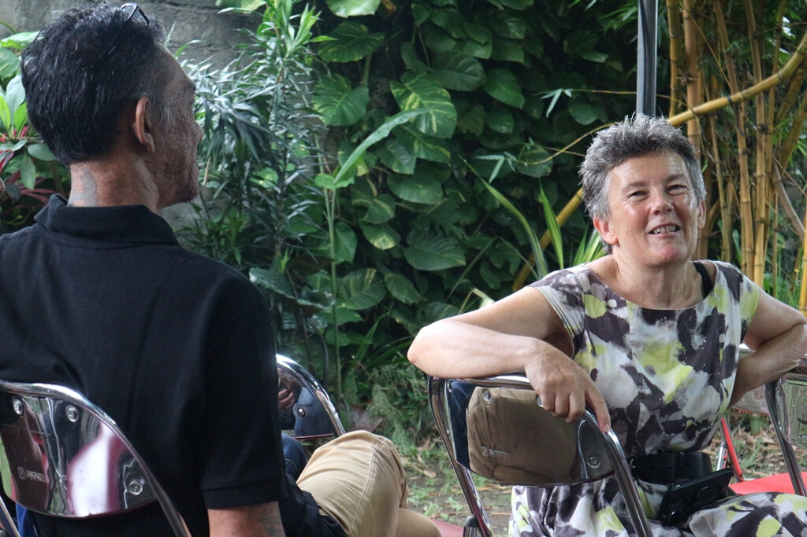
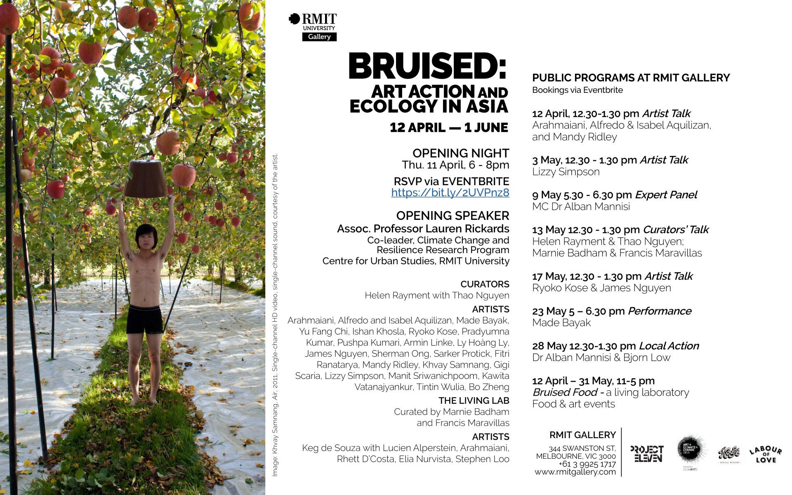
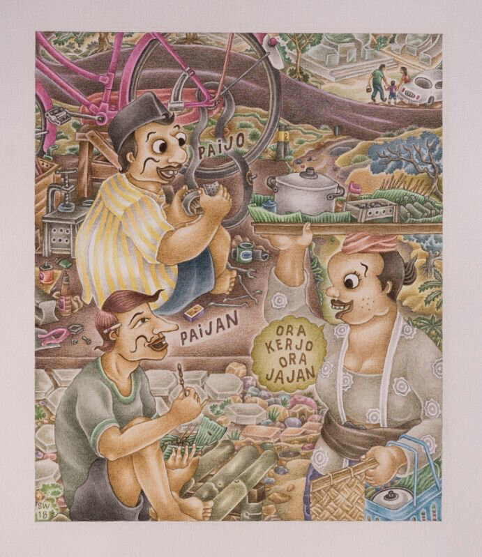
Presented in association with John Cruthers and Lauren Parker from Indo Art Link, Termasuk: Contemporary art from Indonesia showcased recent work by artists based in Indonesia, one of the world’s most vibrant contemporary art scenes.
Termasuk presented recent work by 12 younger and mid-career artists from Indonesia - Agung ‘Agugn’ Prabowo, Arwin Hidayat, Fika Ria Santika, Maharani Mancanagara, Mohamad ‘Ucup’ Yusuf, Mohammad Taufiq (emte), Restu Ratnaningtyas, Ruth Marbun, Sekar Puti, Setu Legi, Surya Wirawan & Theresia Agustina Sitompul.
The exhibition’s curatorial premise was the Indonesian word 'termasuk', meaning “to be included”. By extension it refers to “being considered, to connect, to take part, to enter into, to belong”.